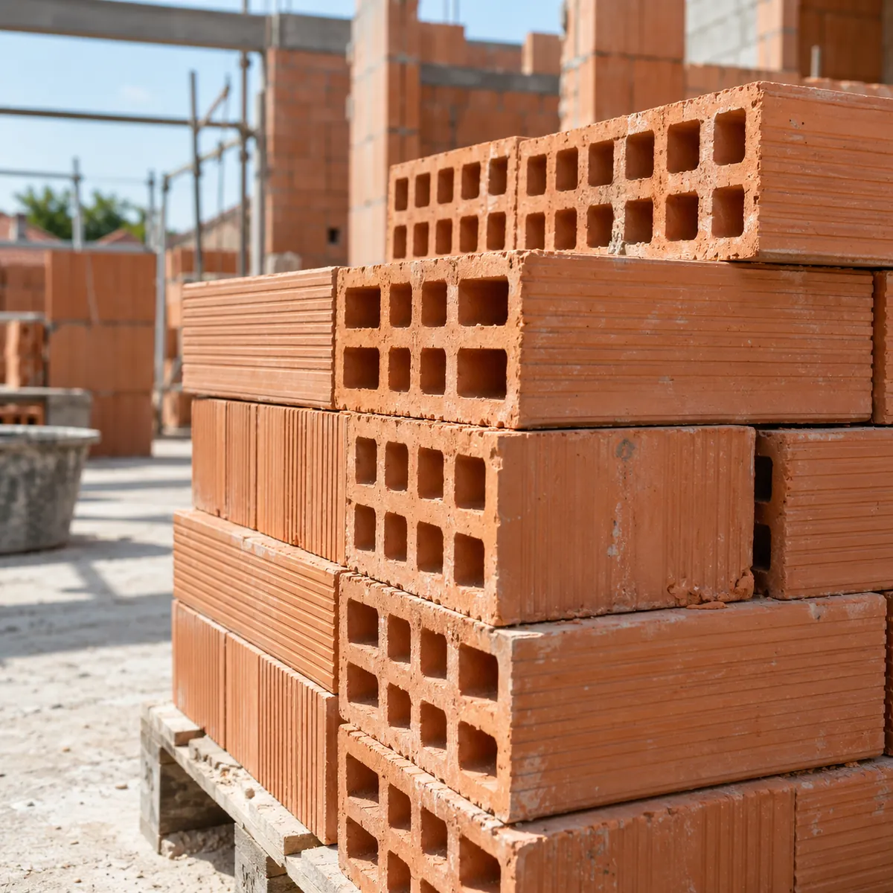
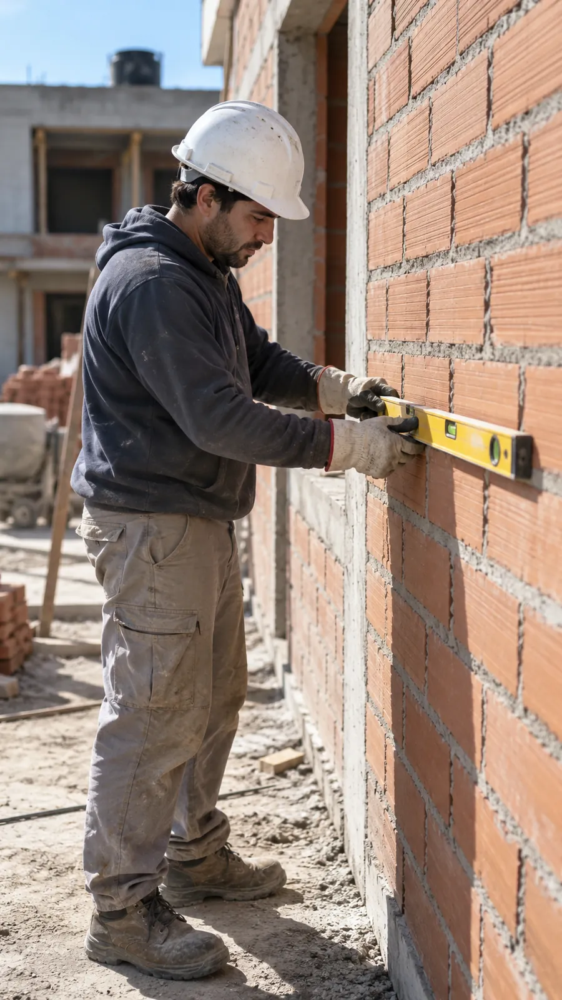
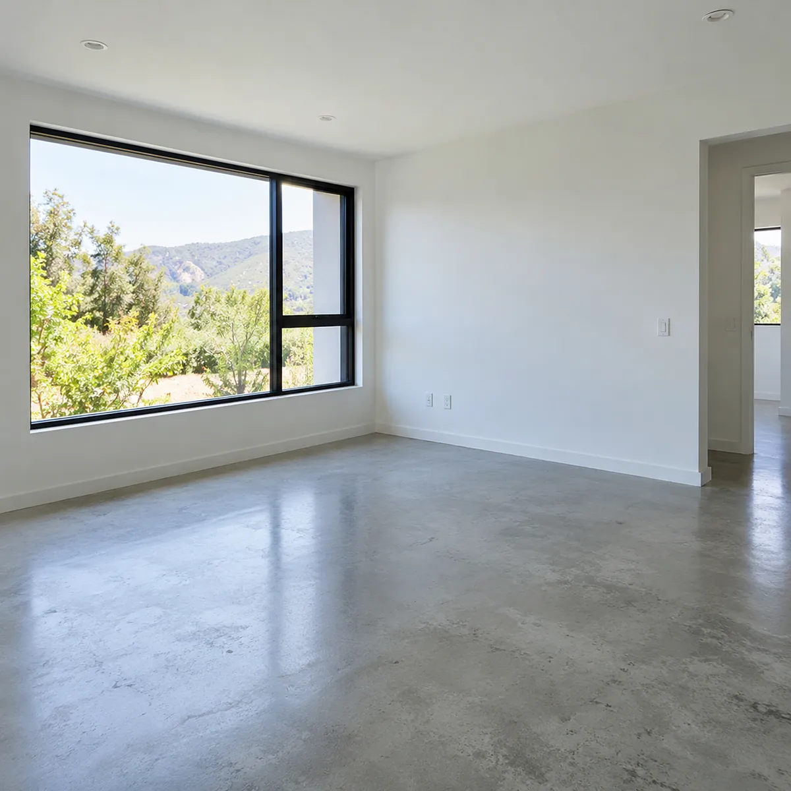
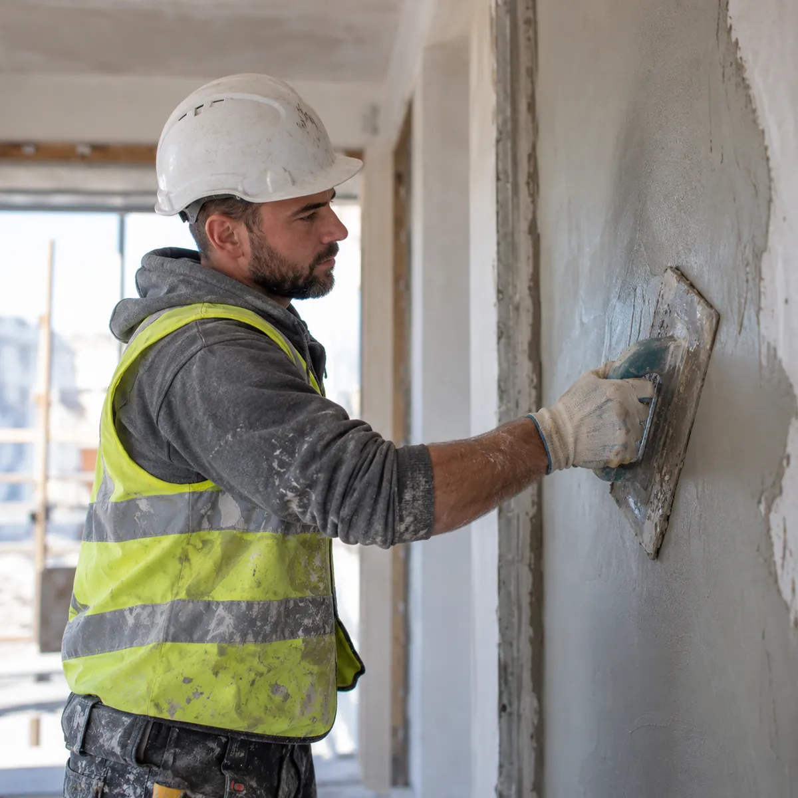
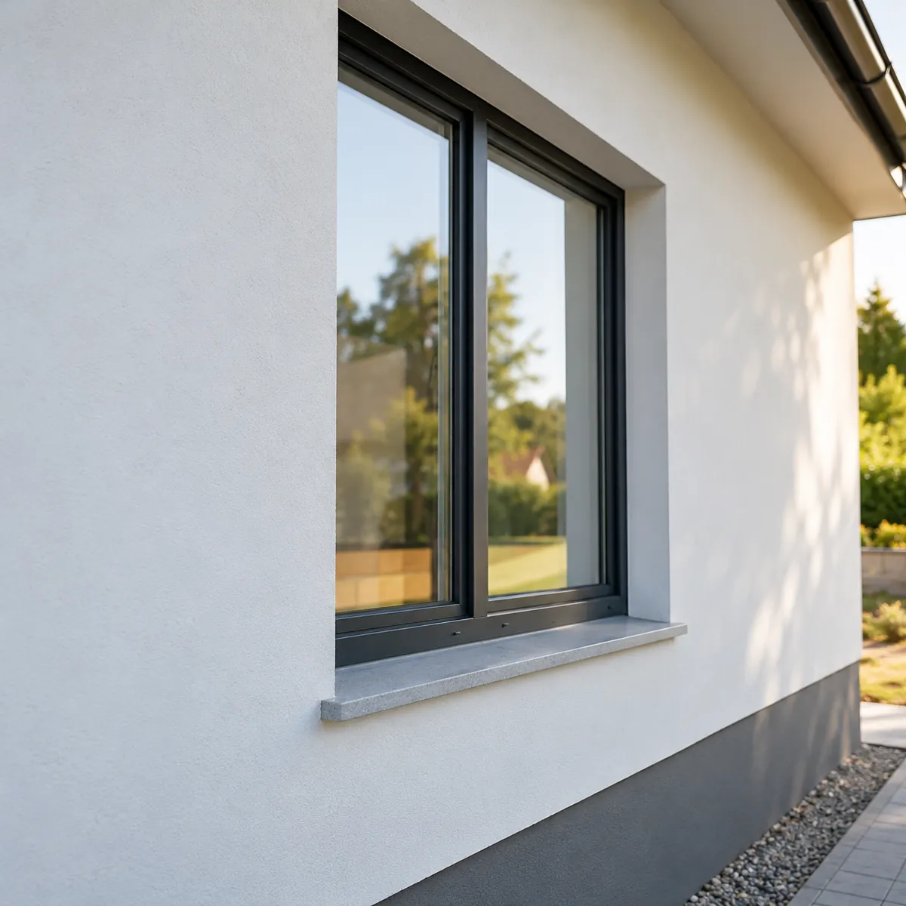
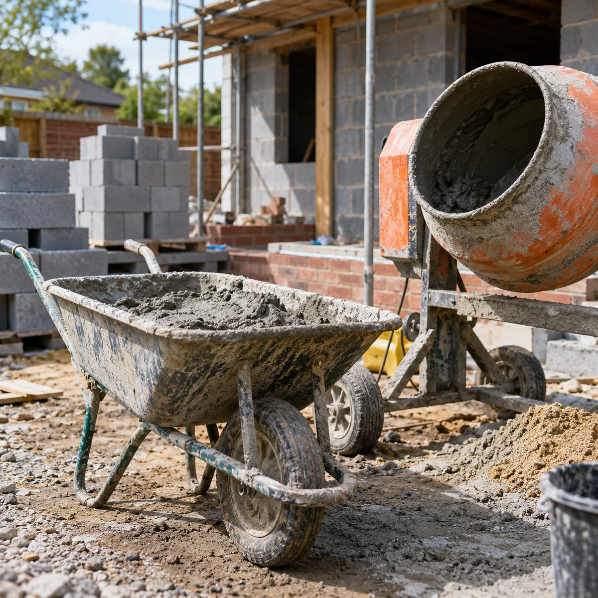
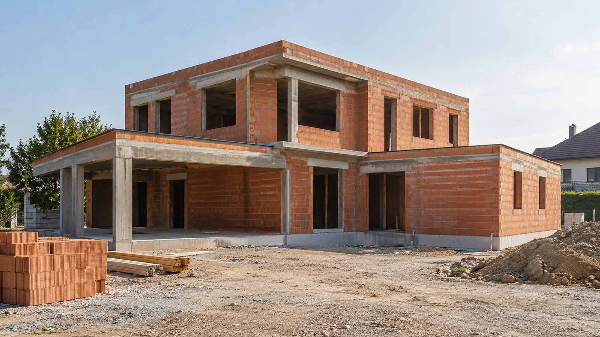
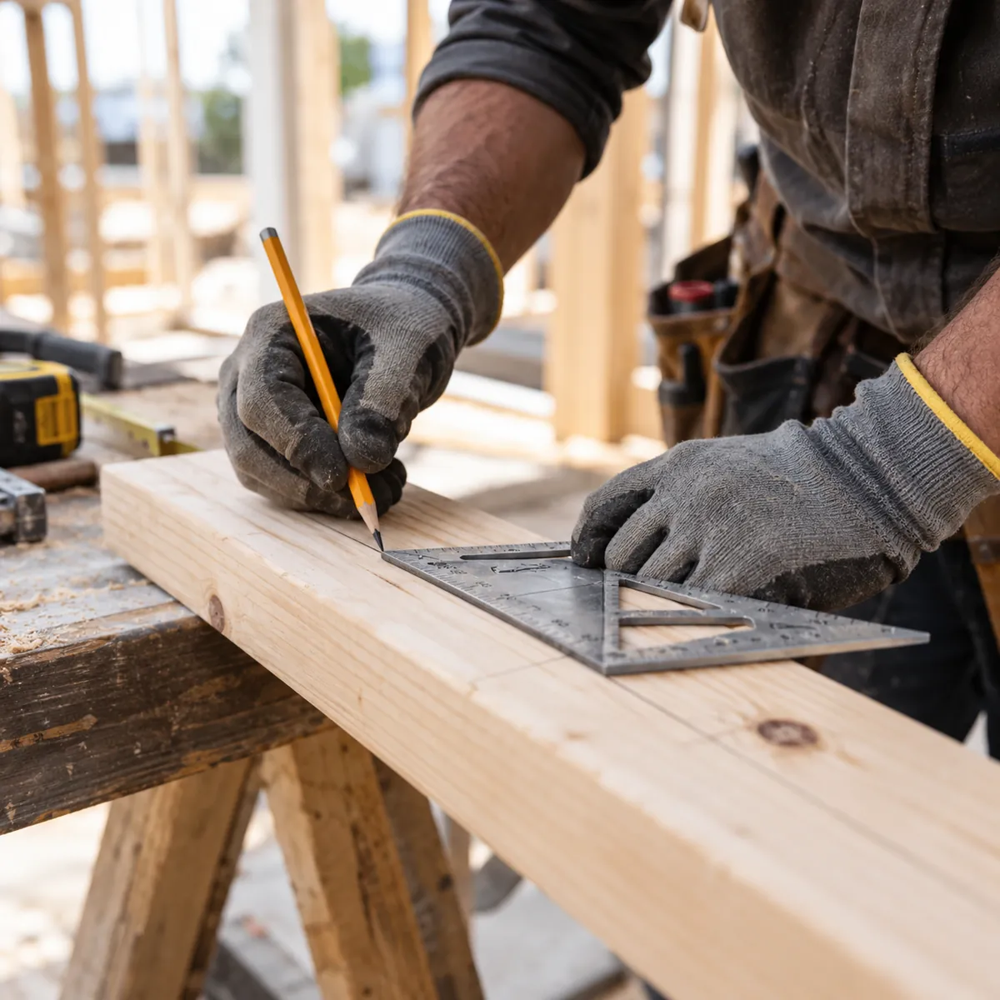

01
Obra nueva
Casas en obra tradicional: bases, estructura de hormigón, paredes de ladrillo y techo.
Consultar obra nuevaConstrucción · Pilar y alrededores
Obra nueva, ampliaciones y reformas en obra tradicional. Contanos tu proyecto y coordinamos una visita para medir y presupuestar.

Qué hacemos
Tomamos la obra entera o la etapa que necesites.

Casas en obra tradicional: bases, estructura de hormigón, paredes de ladrillo y techo.
Consultar obra nueva
Un dormitorio más, una planta alta o un quincho, unidos a lo que ya está construido.
Consultar ampliación
Paredes nuevas o abiertas, revoque grueso y fino, contrapisos y carpetas.
Consultar reforma
La última etapa: superficies parejas, detalles prolijos y la obra limpia para entrar a vivir.
Consultar terminacionesCómo trabajamos

Etapa 1 de 4
Partimos de tus planos o de la idea que tengas. Medimos el terreno, marcamos dónde va cada pared y armamos la lista de materiales.
Al terminar cada pared marcada en el terreno
¿En qué etapa está tu obra? Contanos y vemos cómo seguir.
Contar mi obraGalería
Imágenes ilustrativas: se reemplazan por fotos de obras de Juva.


Contacto
Escribinos qué querés construir y en qué etapa está. Te respondemos por WhatsApp.
+54 9 230 266-5865Pilar y alrededores
Las dos cosas: podemos llevar la obra de los cimientos a la terminación o encargarnos de una etapa, como la estructura, las paredes o los revoques.
Para una casa nueva o una ampliación, los planos los firma un profesional matriculado. Si todavía no los tenés, contanos la idea y vemos por dónde arrancar.
Con los datos de la obra y una visita para medir. Con eso definimos etapas, materiales y tiempos, y te pasamos el presupuesto.
En Pilar y alrededores. Si tu obra queda en otra zona, escribinos y lo vemos.